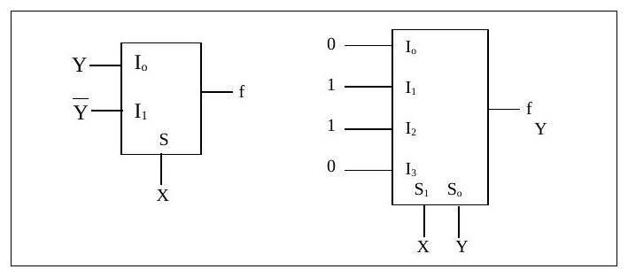
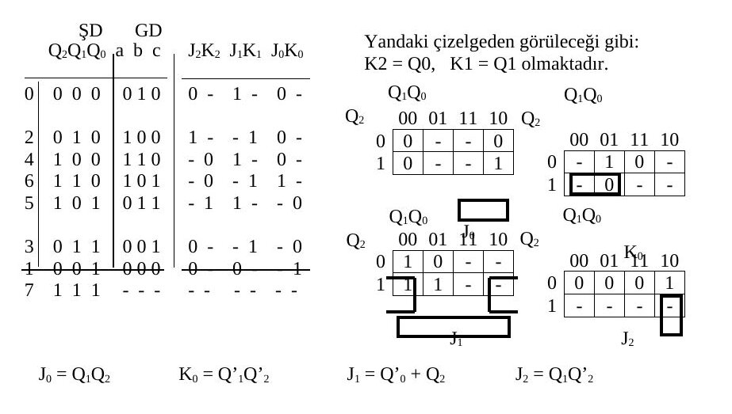
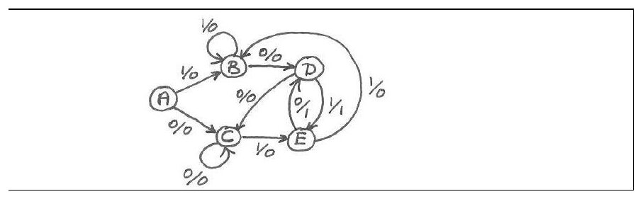
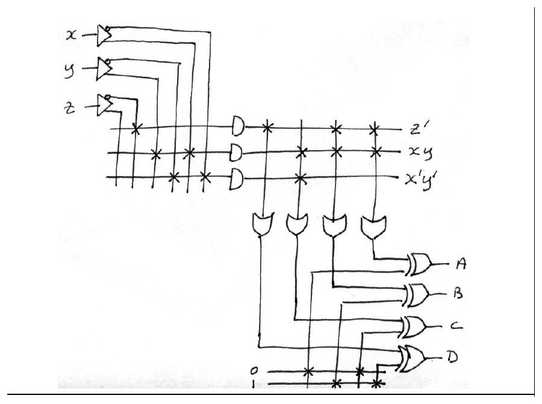
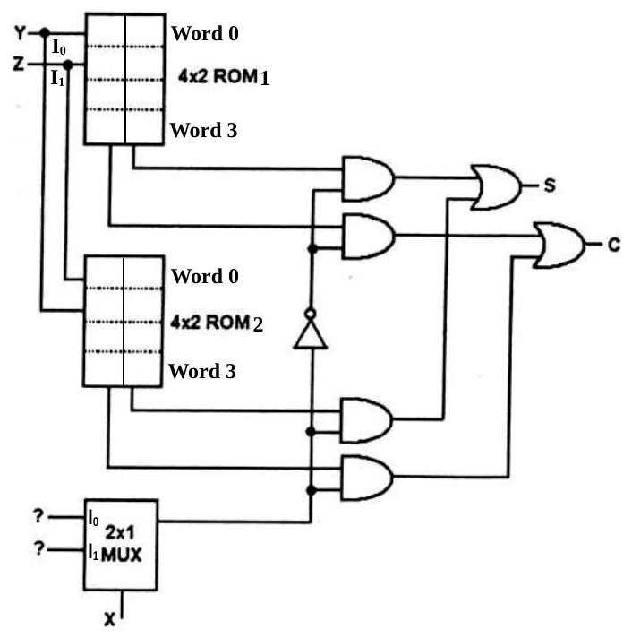
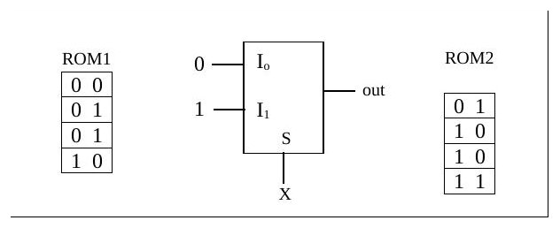

· EEM211
EEM211 Sayısal Mantık Tasarımı: Yarıyıl Sonu Sınavı Yanıtları (11 Ocak 2005)
EEM211 – Sayısal Mantık Tasarımı · 11.01.2005 · 16.10.2026
Bu yazı, Başkent Üniversitesi EEM 211 Sayısal Mantık Tasarımı dersinin 11 Ocak 2005 tarihli yarıyıl sonu (final) sınavının sorularını ve yanıtlarını içeriyor. Sınav Türkçe, süresi 120 dakika. Yanıtlar belgede her sorunun altında çerçeve içinde verilmiş; durum çizgesi ve PLA gibi bazı çizimler el yazısı. Orijinal Word dosyası yazının sonunda indirilebilir.
Soru 1: Aşağıdaki soruları yanıtlayınız (her şık 5 puan, toplam 25)
a) Kanonik biçimler
F(x,y,z) = x'(y'+z) olduğuna göre, F'(x,y,z) ifadesinin özbiçimsel toplamların-çarpımı (canonical product-of-sums) ve özbiçimsel çarpımların-toplamı (canonical sum-of-products) ifadelerini ∏ ve Σ standart kalıplarında yazınız.
| # | x y z | F = x'(y' + z) | F' |
|---|---|---|---|
| 0 | 000 | 1 | 0 |
| 1 | 001 | 1 | 0 |
| 2 | 010 | 0 | 1 |
| 3 | 011 | 1 | 0 |
| 4 | 100 | 0 | 1 |
| 5 | 101 | 0 | 1 |
| 6 | 110 | 0 | 1 |
| 7 | 111 | 0 | 1 |
- F'(x, y, z) = Σ(2, 4, 5, 6, 7)
- F'(x, y, z) = ∏(0, 1, 3)
b) MUX ile XOR
XOR işlevini, X, Y değişkenleri için i) 2x1 MUX ile, ii) 4x1 MUX ile oluşturunuz. (girdilerde 0-1 kullanabilirsiniz)
- 2x1 MUX: I0 = Y, I1 = Y', seçme girişi S = X.
- 4x1 MUX: I0 = 0, I1 = 1, I2 = 1, I3 = 0; seçme girişleri S1 = X, S0 = Y.

c) Hamming denetim bitleri
Hamming kodda, 6-bit veri sözcüğüne kaç adet denetim biti eklemek gerekir? Bu denetim bitleri hangi pozisyonlara yerleşir?
2ᵏ ≥ m + k + 1 olacağına göre, 2⁴ = 16 > 6 + 4 + 1 koşulu, 4 denetim biti ile sağlanır. Bu bitler, 2'nin kuvvetleri olan pozisyonlara, yani 1, 2, 4 ve 8. pozisyonlara yerleşir.
d) İşaret-genlikten 2'ye tümleyene
İşaret-genlik (signed magnitude) yapısındaki gösterimi 00110 olan sayının işaretli 2'ye tümleyen (signed 2's complement) yapısında karşılığı ne olur?
Yine 00110 olarak kalır. Çünkü en anlamlı bit 0 olduğundan sayı pozitiftir.
e) Gray'den ikiliye çevirici
Yalnızca 3 adet XOR geçidi kullanarak bir 4-bit Gray-to-Binary kod dönüştürücü çiziniz.
- Bn = Gn (MSB)
- Bi = Gi ⊕ Bi+1, i = 0, …, n−1
Yani B3 = G3, B2 = G2 ⊕ B3, B1 = G1 ⊕ B2, B0 = G0 ⊕ B1 (devre, 2007 final sınavındaki çizimle aynı).
Soru 2: Aşağıdaki soruları yanıtlayınız (toplam 37 puan)
a) Durum indirgeme (10 puan)
Yandaki durum çizelgesi ile tanımlanan "sequential" devrede gereksiz durumlar bulunup bulunmadığını araştırınız ve şayet varsa, devrenin gereksiz durumları bulunmayan eşdeğerine karşılık gelen indirgenmiş durum çizelgesini bulunuz.
| Şimdiki durum | Gelecek, x = 0 | Gelecek, x = 1 | Çıktı, x = 0 | Çıktı, x = 1 |
|---|---|---|---|---|
| a | f | b | 0 | 0 |
| b | d | c | 0 | 0 |
| c | f | e | 0 | 0 |
| d | g | a | 1 | 0 |
| e | d | c | 0 | 0 |
| f | f | b | 1 | 1 |
| g | g | h | 0 | 1 |
| h | g | a | 1 | 0 |
Verilen çizelgedeki durumları, aynı girdi dizilerine karşın aynı çıktı dizileri üretip üretmediklerine bakarak denklik kümeleri içinde toparlarsak:
- P0 = (abcdefgh)
- P1 = (abce)(dh)(f)(g)
- P2 = (ac)(be)(dh)(f)(g)
buluruz. Bu da verilen "sequential" devrenin kendisine denk olan 5 durumlu bir devreye indirgenebileceğini gösterir. Her küme içinden bir durum seçer ve gelecek durumlarla çıktıları buna göre yeniden düzenleyerek indirgenmiş çizelgeyi oluştururuz:
| Şimdiki durum | Gelecek, x = 0 | Gelecek, x = 1 | Çıktı, x = 0 | Çıktı, x = 1 |
|---|---|---|---|---|
| a | f | b | 0 | 0 |
| b | d | a | 0 | 0 |
| d | g | a | 1 | 0 |
| f | f | b | 1 | 1 |
| g | g | d | 0 | 1 |
b) JK flip-flop'lu senkron sayaç (15 puan)
J-K flip-floplar kullanarak, 0-2-4-6-5-3-1 dizisini (binary) art arda yineleyen bir senkron sayaç tasarlayınız. J-K flip-floplarda yalnızca J, K ve saat girişleri bulunmaktadır. Tasarımınıza önce durum ve uyarı (J-K giriş sinyalleri) çizelgesini oluşturarak başlayınız ve devrenizin (combinational bölüm) hem minimal olmasına, hem de kullanılmayan durumdan çıkabilmesine özen gösteriniz.
Durum ve uyarı çizelgesi (ŞD: şimdiki durum, GD: gelecek durum, "-": fark etmez):
| # | Q2Q1Q0 | GD | J2K2 | J1K1 | J0K0 |
|---|---|---|---|---|---|
| 0 | 000 | 010 | 0 - | 1 - | 0 - |
| 2 | 010 | 100 | 1 - | - 1 | 0 - |
| 4 | 100 | 110 | - 0 | 1 - | 0 - |
| 6 | 110 | 101 | - 0 | - 1 | 1 - |
| 5 | 101 | 011 | - 1 | 1 - | - 0 |
| 3 | 011 | 001 | 0 - | - 1 | - 0 |
| 1 | 001 | 000 | 0 - | 0 - | - 1 |
| 7 | 111 | - - - | - - | - - | - - |
Yandaki çizelgeden görüleceği gibi: K2 = Q0, K1 = Q1 olmaktadır.
Karnaugh haritalarından:
- J0 = Q1Q2
- K0 = Q1'Q2'
- J1 = Q0' + Q2
- J2 = Q1Q2'
Q2Q1Q0 = 111 iken J0 = 1, K0 = 0, J1 = 1, K1 = 1, J2 = 0, K2 = 1 olacağından, gelecek durum Q2Q1Q0 = 100 olur. Bu da geçerli bir durumdur.

Not: J2 için haritada yalnız Q2Q1Q0 = 010 durumunda 1 var (011 durumunda J2 = 0 olmalı); bu yüzden J2 = Q1Q0' olmalı. Belgedeki J2 = Q1Q2' ifadesi 011 → 001 geçişinde J2 = 1 verip sayacı yanlış duruma götürür. Ayrıca belgede verilen değerlerle 111 durumunda Q2 sıfırlanır (J2 = 0, K2 = 1), Q1 tersine döner (1 → 0) ve Q0 1 olur; yani gelecek durum Q2Q1Q0 = 001'dir (yine geçerli bir durum). Belgedeki "100" sonucu bitlerin Q0Q1Q2 sırasıyla yazılmış hâli gibi görünüyor.
c) 101 / 010 dizi algılayıcı (12 puan)
İletilen bitleri girdi ucundan seri olarak alan ve her 101 veya 010 dizisini algılayışında 1 çıktısı, bunun dışında ise 0 çıktısı veren bir "sequential" devrenin durum çizgesini (state diagram) oluşturunuz. Diziler iç içe (overlapping) olabilir. Çizgeniz minimum sayıda durum içermelidir.
ÖRNEK (en soldaki bit, ilk giren bittir):
girdi dizisi: 0 0 1 0 1 0 1 1 1 0 1 1 0 0 . . .
çıktı dizisi: 0 0 0 1 1 1 1 0 0 0 1 0 0 0 . . .Yanıtta beş durumlu (A–E) el çizimi bir Mealy durum çizgesi veriliyor; geçişler girdi/çıktı biçiminde etiketli.

Soru 3: PLA (18 puan)
Aşağıda verilen A, B, C ve D işlevlerini gerçekleştiren bir PLA devresi çiziniz. Devrenizdeki çarpım terimleri (product terms) minimal olmalıdır. A(x,y,z) = Σ(0,2,4,6,7), B(x,y,z) = Σ(1,3,5), C(x,y,z) = Σ(0,1,6,7), D(x,y,z) = Σ(1,3,5,7)
Karnaugh haritaları (satırlar x, sütunlar yz = 00, 01, 11, 10):
| 00 | 01 | 11 | 10 | |
|---|---|---|---|---|
| A, x = 0 | 1 | 0 | 0 | 1 |
| A, x = 1 | 1 | 0 | 1 | 1 |
| B, x = 0 | 0 | 1 | 1 | 0 |
| B, x = 1 | 0 | 1 | 0 | 0 |
| C, x = 0 | 1 | 1 | 0 | 0 |
| C, x = 1 | 0 | 0 | 1 | 1 |
| D, x = 0 | 0 | 1 | 1 | 0 |
| D, x = 1 | 0 | 1 | 1 | 0 |
Karnaugh çizgeleri üzerinden minimal işlevleri yazarsak:
| İşlev | Tümleyeni |
|---|---|
| A = z' + xy | A' = x'z + y'z |
| B = x'z + y'z | B' = z' + xy |
| C = xy + x'y' | C' = x'y + xy' |
| D = z | D' = z' |
Bold ifadeler en az çarpım terimi gerektirmektedir.
Böylece PLA'da yalnızca üç çarpım terimi (z', xy, x'y') kullanılıyor; B ve D, B' ve D' toplamlarının çıkıştaki XOR kapılarıyla terslenmesiyle elde ediliyor.

Soru 4 (toplam 20 puan)
a) ROM ile tam toplayıcı (12 puan)
Aşağıda verilen devrenin tam toplayıcı (full adder) olabilmesi için, ROM1 ve ROM2 gözlerine ve ? işareti ile belirlenen yerlere gereken bitleri (0-1) yazınız.
Devrede Y ve Z adres girişli iki adet 4x2 ROM, bir 2x1 MUX, bir NOT kapısı, dört AND ve iki OR kapısı var; çıkışlar S ve C.

Yanıt:
| Word | ROM1 | ROM2 |
|---|---|---|
| 0 | 0 0 | 0 1 |
| 1 | 0 1 | 1 0 |
| 2 | 0 1 | 1 0 |
| 3 | 1 0 | 1 1 |
2x1 MUX'un girişleri: I0 = 0, I1 = 1, seçme girişi S = X (çıkış out).

b) Kaydırma yazmaçları (8 puan)
Aşağıdaki devrede Shift control = 1 olduktan sonra gelen T1, T2 ve T3 saat vurularında A ve B yazmaçlarının içeriği ne olur? (başlangıçta A = 1100 ve B = 1110 yüklüdür.)
3 clock darbesinden sonra A = 1101 ve B = 1101 olur.
| Darbe | A | B |
|---|---|---|
| Başlangıç | 1100 | 1110 |
| T1 | 0110 | 0111 |
| T2 | 1011 | 1011 |
| T3 | 1101 | 1101 |
Puanlar
| Soru | Puan |
|---|---|
| Soru 1 | 25 (her şık 5) |
| Soru 2 | 37: a) 10, b) 15, c) 12 |
| Soru 3 | 18 |
| Soru 4 | 20: a) 12, b) 8 |